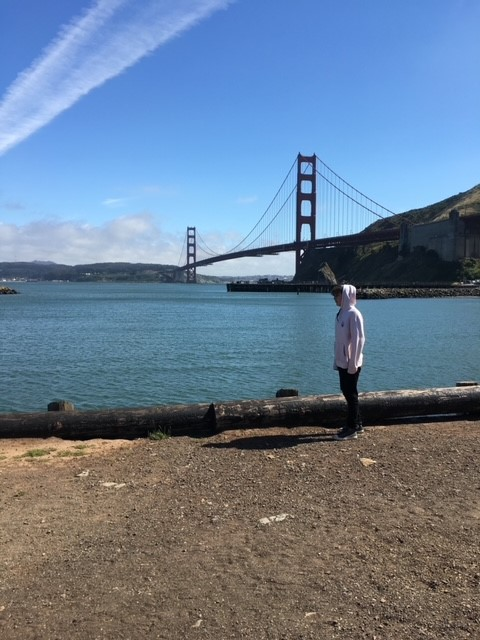

Hello World!
Hello World, from the San Francisco Bay Area!
Here is a picture of my son a few years ago, with the Golden Gate Bridge in the background.

Some fun facts about the bridge!
Although it appears red, the color of the bridge is actually painted International Orange.
The bridge is continuously painted due to high salt content in the air.
The bridge was originally painted with lead based primer and topcoat.
Golden Gate Bridge - Painting the Bridge